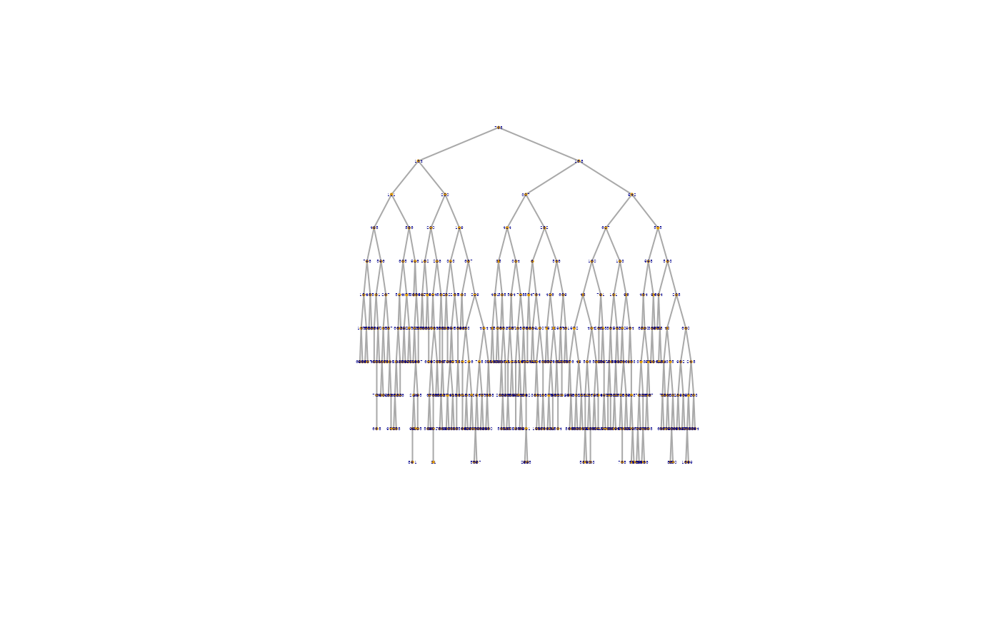
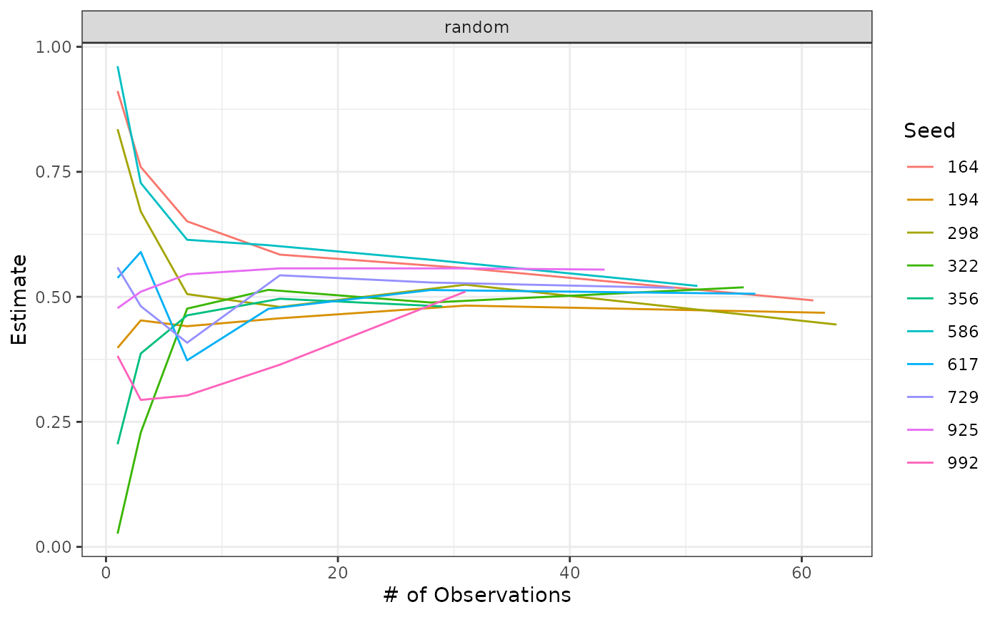

Intro on RDS: Respondent-Driven Sampling
RDS was designed to survey hidden and hard-to-reach populations: No sampling frame; traditional sampling methods are not possible
These populations often want to remain hidden due to practices and behaviors that are illegal or stigmatized (i.e. sex workers, injection drug users, men who have sex with men).
Assumptions:
Respondents know each other as members of the target population (and these are reciprocal). For example, injuction drug users (IDUs) that know each other and also know each other to be an injection drug user.
Respondents’ networks are linked and form a single network, rather than multiple, disconnected networks, such that any member of the population population is reachable from any other member through the network. An example where this assumption is not met would be if the population of interest’s (injection drug users) network is separated by socioeconomic status (SES). So that IDUs with low SES are members of a network that is separate and does not interact with the network formed by IDUs with high SES. These would be two subsets of the population that are disconnected and cannot be reached by the peer recruitment process and thus the RDS findings will not be generalizable to these groups
Sampling occurs with replacement (population from which a sample is gathered is infinitely large and will not ‘run out’ of respondents during the recruitment)
Respondents can accurately report their personal network size (and this needs to be measured). ‘How many other [insert eligibility criteria/ population of interest] do you know?’ Network size is used for weighting to account for respondents who are have larger vs. smaller network sizes (peopl who are more vs. less social and popular), and hence have more or less chance of being recruited.
Peer recruitment is a random selection from the recruiter’s network. RDS assumes that respondents recruit as though they were selecting randomly from their personal networks.
- Sampling design: Require respondents to choose from among their social circle rather than the researcher chooses.
- Seed Dependence: follow only a few links from each sampled
- Confidentiality:respondent-driven:respondents distribute uniquely identified coupons. no names.
- Estimation: Several approaches
- Effective at obtaining large varied samples in many populations.
- Widely used: over 100 studies, in over 30 countries. Often HIV-risk populations.
Heckathorn, D.D.,“Respondent-driven sampling: A new approach to the study ofhidden populations.”Social Problems, 1997.Salganik, M.J. and D.D. Heckathorn,“Sampling and estimation in hidden populationsusing respondent-driven sampling.”Sociological Methodology, 2004.
Ensure very long recruitment chains in RDS (consider coupon reduction techniques, 2 vs. ≥3 for populations with dense networks).
Have fewer, well selected seeds; direct them on who to recruit.
Use diagnostics on already collected data to minimize bottlenecks in future rounds of data collection.
Monitor recruitment daily
Consider “narrowing” eligibility criteria to exclude problematic sub-populations.
Import, Export and Reformat Data
Import Data
If you are importing RDS data from a non-RDS file format (e.g., .xls or .csv), it must have certain variables defined, and those variables must be in specific formats, for it to be valid RDS data. They are:
Subject ID: Each row of the data, i.e. each survey respondent, must be identified with a unique subject ID. This will mostly likely be an identification number (integer or double format) or an anonymous label (character format) associated with the respondent. There should not be any missing or NA values in the Subject ID column.
Network Size: Each respondent’s self-reported network size (or degree), i.e. their number of associations (or alters) in the target population. Ideally, there are no missing or NA values in this column.
Recruitment time: An optional date or numeric variable indicating the time that each subject was recruited.
Recruitment Information: This tracks the path of recruitment in the sample and is either in Coupon Format or Recruiter ID Format. Upon loading data that is not already in RDS format, you will be prompted to convert the data to Coupon or Recruiter ID format. For more on this process, see RDSAnalystConvertToRDS. Note, you can leave the data un-converted if you do not want to use the RDS analysis features.
Convert Data to RDS Format
Whether you automatically access the data conversion function upon uploading data or choose it from the Data menu, there are two possible RDS data formats:
Recruiter ID format (long-format)
Rather than tracking recruitment paths through coupons, in this format a Recruiter ID column records the subject ID of the recruiter for each respondent. Seeds are identified by a shared recruiter ID such as 0. Upon conversion, columns identifying each respondent’s wave and seed are created if not already present. Example: Convert nyjazz data set to RDS coupon format
data("faux")
data("fauxmadrona")
# We'll convert the 'faux' dataset into a tibble similar to what we'd get from reading in a CSV for illustration purposes
faux <- as_tibble(faux)
# And then back to the proper format
faux <-
faux %>%
as.rds.data.frame(
id = "id",
recruiter.id = "recruiter.id",
network.size = "network.size")Coupon format (wide-format)
In this format there are several columns in the data containing coupon numbers. One column is for each respondent’s own coupon, and the others (e.g. coupon.1, coupon.2, etc.) list the coupons they may have distributed. Thus, the recruitment path is stored through the coupon numbers. The seeds generally have own coupon numbers of 0, NA or something similar. Upon conversion, columns identifying each respondent’s recruiter ID, wave and seed are created if not already present.
Data in coupon format has to be converted to recruiter format before being passed to as.rds.data.frame(). The standard dplyr tibble pivoting verbs can be of help here.
Common Data Problems & Solutions
Each subject must have a unique non-missing ID Symptom Error message in console when importing -> Solution 1.Edit data to insert missing ids 2.Remove extraneous rows
Importing Coupon Format Problem The subject’s coupon must match exactly one of the coupon variables in the recruiter’s row. Symptom Incorrect recruitment tree plots Solution 1.Fix data entry errors in coupon variables. 2.Look for trailing and/or leading white space (spaces) in the coupon variables
Importing Recruiter ID Format Problem The subject’s coupon must match exactly one of the coupon variables in the recruiter’s row. Symptom Error shown in console, or incorrect recruitment tree plots Solution 1.Fix data entry errors in the subject ID and recruiter ID variables. 2.Look for trailing and/or leading white space (spaces).
Importing Recruiter ID Format Problem All seeds must have the same recruiter ID which can not be present in the Subject ID Symptom Error shown in console or incorrect recruitment tree plots Solution 1.Manually edit the recruiter id’s of the seeds. 2.Look to make sure the seeds’ recruiter id is not present in the subject id.
Rounding error in IDS Problem Coupon or ID variables are numeric and some have 15 or more digits. Symptom Recruitment structure incorrectly read in except when using .rdsat and .rdsobj formats. Solution 1.Edit variables to have non-numeric type (e.g. add a “c” to the beginning of all coupon variables). 2.Put data file in .rdsat format
Edit RDS Meta Data
An RDS data set’s “Meta Data” stores information about the variable names associated with:
- Subject ID: Uniquely identifies survey participants. It should not contain and NA values.
- Recruiter ID: should be a subset of subject ID values except for seeds who share a recruiter ID not used in Subject ID, e.g. 0. Also should not have NA values.
- Network Size: a.k.a Degree, is the number of connections in the network that each respondent reports.
- Max # of Coupons: The number of recruitment coupons distributed to each participant.
- Population Size Estimate: Mid values may be used as the default population size.
You can view those attributes the usual way:
attributes(faux) %>% str() # passing to str() to reduce output size
#> List of 25
#> $ names : chr [1:9] "id" "recruiter.id" "X" "Y" ...
#> $ row.names : int [1:389] 1 2 3 4 5 6 7 8 9 10 ...
#> $ notes : chr "This is an example data set provided in the RDS Analyst package. Type 'help(faux)' for information on it."
#> $ weight.type : chr "Gile's SS"
#> $ uncertainty : chr "Gile's SS"
#> $ network.size.variable : chr "network.size"
#> $ id.variable : chr "id"
#> $ recruiter.id.variable : chr "recruiter.id"
#> $ weights : num [1:389] 0.0259 0.0303 0.0269 0.0407 0.0233 ...
#> $ max.coupons : num 2
#> $ na.symbol : logi NA
#> $ number.of.bootstrap.samples : num 20
#> $ confidence.level : num 95
#> $ boxplots.pdf : chr "No"
#> $ stratify.boxplots : chr "wave"
#> $ boxplots : chr "network.size"
#> $ number.ss.samples.per.iteration: num 2000
#> $ recruiter.id : chr "recruiter.id"
#> $ id : chr "id"
#> $ network.size : chr "network.size"
#> $ population.size.mid : num 1000
#> $ population.size.low : num 500
#> $ population.size.high : num 1500
#> $ design :List of 9
#> ..$ cluster :'data.frame': 389 obs. of 1 variable:
#> .. ..$ ids: int [1:389] 735 134 168 111 220 307 942 627 575 498 ...
#> ..$ strata :'data.frame': 389 obs. of 1 variable:
#> .. ..$ V1: num [1:389] 1 1 1 1 1 1 1 1 1 1 ...
#> ..$ has.strata: logi FALSE
#> ..$ prob : num [1:389] 0.414 0.484 0.43 0.65 0.372 ...
#> ..$ allprob :'data.frame': 389 obs. of 1 variable:
#> .. ..$ weights: num [1:389] 0.414 0.484 0.43 0.65 0.372 ...
#> ..$ call : language svydesign(ids = faux[[attr(faux, "id")]], weights = faux$weights, fpc = rep(attr(faux, "population.size.mid"| __truncated__
#> ..$ variables :Classes 'rds.data.frame' and 'data.frame': 389 obs. of 8 variables:
#> .. ..$ id : int [1:389] 735 134 168 111 220 307 942 627 575 498 ...
#> .. ..$ recruiter.id: int [1:389] 0 735 735 134 134 168 168 942 942 111 ...
#> .. ..$ X : Factor w/ 2 levels "blue","red": 2 1 2 1 1 2 2 2 2 2 ...
#> .. ..$ Y : Factor w/ 3 levels "black","blue",..: 1 1 1 1 1 3 2 3 1 1 ...
#> .. ..$ network.size: int [1:389] 16 20 17 32 14 25 43 28 11 10 ...
#> .. ..$ wave : int [1:389] 0 1 1 2 2 2 2 3 3 3 ...
#> .. ..$ seed : int [1:389] 735 735 735 735 735 735 735 735 735 735 ...
#> .. ..$ weights : num [1:389] 2.41 2.07 2.33 1.54 2.69 ...
#> .. .. ..- attr(*, "N")= num 1000
#> .. .. ..- attr(*, "estimateN")= num 1000
#> .. ..- attr(*, "notes")= chr "This is an example data set provided in the RDS Analyst package. Type 'help(faux)' for information on it."
#> .. ..- attr(*, "weight.type")= chr "Gile's SS"
#> .. ..- attr(*, "uncertainty")= chr "Gile's SS"
#> .. ..- attr(*, "network.size.variable")= chr "network.size"
#> .. ..- attr(*, "id.variable")= chr "id"
#> .. ..- attr(*, "recruiter.id.variable")= chr "recruiter.id"
#> .. ..- attr(*, "weights")= num [1:389] 0.0259 0.0303 0.0269 0.0407 0.0233 ...
#> .. ..- attr(*, "max.coupons")= num 2
#> .. ..- attr(*, "na.symbol")= logi NA
#> .. ..- attr(*, "number.of.bootstrap.samples")= num 20
#> .. ..- attr(*, "confidence.level")= num 95
#> .. ..- attr(*, "boxplots.pdf")= chr "No"
#> .. ..- attr(*, "stratify.boxplots")= chr "wave"
#> .. ..- attr(*, "boxplots")= chr "network.size"
#> .. ..- attr(*, "number.ss.samples.per.iteration")= num 2000
#> .. ..- attr(*, "recruiter.id")= chr "recruiter.id"
#> .. ..- attr(*, "id")= chr "id"
#> .. ..- attr(*, "network.size")= chr "network.size"
#> .. ..- attr(*, "population.size.mid")= num 1000
#> .. ..- attr(*, "population.size.low")= num 500
#> .. ..- attr(*, "population.size.high")= num 1500
#> ..$ fpc :List of 2
#> .. ..$ popsize : num [1:389, 1] 1000 1000 1000 1000 1000 1000 1000 1000 1000 1000 ...
#> .. ..$ sampsize: int [1:389, 1] 389 389 389 389 389 389 389 389 389 389 ...
#> .. ..- attr(*, "class")= chr "survey_fpc"
#> ..$ pps : logi FALSE
#> ..- attr(*, "class")= chr [1:2] "survey.design2" "survey.design"
#> $ class : chr [1:2] "rds.data.frame" "data.frame"Recode Variables
If necessary, you can use the forcats package to recode, reorder, or collapse factors as necessary for analysis.
Export (Save) Data
The write.* function of families can be used to export data into any of the following formats:
- RDS Analyst (.rdsobj) - Stores a RDS data frame in the native RDS analyst format, and does not need to be converted if re-imported to RDS Analyst (see RDSAnalystImportRDSData)
- Flat File (.robj, .csv) - Uses the dput function to write an ASCII text representation of a data frame to a file or connection (.robj).
- __ Netdraw (.dl, .vna)__ - Stores a RDS data frame’s recruitment tree in NetDraw format
- GraphViz (.gz) - Stores a RDS data frame’s recruitment tree as a GraphViz file
write.rdsat(faux, "faux") # the '.rdsat' extension is added automaticallyVisualize and Summarize Data
Since the rds.data.frame class only exists for method dispatch, you can inspect objects of rds.data.frame like any other data.frame by printing them to the console or using RStudio’s built-in data viewer.
# print to the console
glimpse(faux)
#> Rows: 389
#> Columns: 9
#> $ id <chr> "735", "134", "168", "111", "220", "307", "942", "627", …
#> $ recruiter.id <chr> "seed", "735", "735", "134", "134", "168", "168", "942",…
#> $ X <fct> red, blue, red, blue, blue, red, red, red, red, red, blu…
#> $ Y <fct> black, black, black, black, black, green, blue, green, b…
#> $ Z <fct> red, red, red, red, red, red, blue, red, red, red, blue,…
#> $ network.size <dbl> 16, 20, 17, 32, 14, 25, 43, 28, 11, 10, 26, 21, 28, 22, …
#> $ wave <int> 0, 1, 1, 2, 2, 2, 2, 3, 3, 3, 3, 3, 3, 3, 3, 4, 4, 4, 4,…
#> $ seed <chr> "735", "735", "735", "735", "735", "735", "735", "735", …
#> $ weights <dbl> 2.413615, 2.067591, 2.327383, 1.537643, 2.685803, 1.7583…
# built-in viewer (only works in interactive sessions)
if (interactive())
View(faux)Plot the Recruitment Tree
The Plot Recruitment Tree produces a publication quality graphics plot of the recruitment tree. As shown below, you can use variables from the data to set the node color, size and labels of the recruitment tree.
Are the chains long? Do most of the subjects come from the same seed? Visualize homophily.
plot(faux)
Underneath the hood, plot() calls reingold.tilford.plot() which allows for customizing the color, size, and labels of the vertices as desired. See the function documentation for more details and pass the arguments into plot().
Plot Recruitment Diagnostics
The Recruitment Diagnostics creates up to five charts, providing a snapshot of the recruitment process:
- Network Size by wave
plot(faux, plot.type = "Network size by wave")- Recruits by wave
plot(faux, plot.type = "Recruits by wave")- Recruits by Seeds
plot(faux, plot.type = "Recruits per seed")- Recruits by subject
plot(faux, plot.type = "Recruits per subject")Does network size change over the course of sampling? How many recruits are in each wave? How many recruits originate from each seed?
Analyze Data
Population Frequency Estimates
This dialog computes a point estimate and confidence interval of population frequency (prevalence), for one or more categorical variables.
RDS.bootstrap.intervals(faux, outcome.variable = "X")
#>
#> Note: Using the data's mid population size estimate: N = 1000
#> Using 101 bootstrap samples.
#> Gile's SS Estimate for X
#> Estimate (%) 95% Interval Design Effect Std. Error N
#> blue 30.8 ( 27.12, 34.54) 1.07 1.89 118
#> red 69.2 ( 65.46, 72.88) 1.07 1.89 271
#> Total 389
#> * Using population size estimate: 1000The default method is Gile’s SS estimator, where the confidence interval is computed using Gile’s bootstrap method. This is a computationally-intensive procedure and can take a minute or longer to complete.
Convergence Plot
Convergence plots help to determine whether the final RDS estimate is biased by the initial convenience sample of seeds. If the estimates shown in the plots do not level off as the sample size increases then the current estimate is probably biased by the choice of seeds. It is recommended to create a convergence plot of all traits of interest during the research process and extend sampling if the estimate has not stabilized.
measures progression of enrolling subjects to determine when the proportion for a characteristic approaches and remains stable in relation to the adjusted estimate
convergence.plot(fauxmadrona, outcome.variable = "disease")The convergence plots below show a data set that has converged using fauxmadrona.
Note that although the plot on the left shows convergence, there is a chance that additional data would not follow this trend. The recruitment tree could be stuck in a sub-population of the population of interest. This is discussed further below.
Bottleneck Plot
Bottleneck plots are used to asses whether the population of interest contains distinct sub-communities that could bias the RDS estimate. If the sub-communities tend to recruit from within (i.e. exhibit homophily) then the choice of seeds may generate a biased sample. If the sub-communities are different with respect to the population characteristic of interest then the RDS prevalence estimate may also be biased.
Estimate precision is based on underlying network structure and traits within the structure.
Assume that the structure makes up one complete social network component.
Some structures have sub-populations not connected within the network structure.
Especially problematic when traits differ between unconnected sub-populations in a sample.
An example of this scenario is described in “Diagnostics for Respondent-driven Sampling” (Gile, Johnston, Salganik 2012):
“Imagine a city with street-based sex workers and brothel-based sex workers where there are many social connections within these groups, but few connections between these groups. Further, imagine that brothel-based sex workers use condoms regularly, whereas street-based sex workers do not. This situation will be problematic for RDS because the network”bottleneck" between the two groups will prevent the sample from exploring the entire population and could lead to inaccurate estimates about both sex worker type (i.e., brothel-based vs. street-based) and condom usage."
Each line of a bottleneck plots tracks an estimate of a characteristic of an interest based on one of the seeds. If the estimates converge as the samples from each seed (their trees) grow, then there is no indication of a bottleneck along this characteristic.
Below are two bottleneck plots prepared from the fauxmadrona data set. Both track the samples originating from each of the 10 seeds, as labeled by ID in the legend at right. (Note that the lines for each seed end at different places, reflecting the different sizes of the trees that originate from each seed.) The first plot tracks the estimate of the prevalence of disease in the population. While the estimates start at a range of values, they all converge toward about 20%, showing no evidence of divided sub-communities of infected and uninfected.
bottleneck.plot(fauxmadrona, outcome.variable = "disease")
#> [1] "194"
#> [1] "298"
#> [1] "164"
#> [1] "617"
#> [1] "586"
#> [1] "322"
#> [1] "729"
#> [1] "925"
#> [1] "992"
#> [1] "356"Similarly, the plot at right tracks the samples along a completely randomized 0/1 indicator variable for the population. As expected, the prevalence estimates of this indicator converge toward .5, with some variation around that estimate.
bottleneck.plot(fauxmadrona %>% mutate(random = runif(nrow(fauxmadrona))), outcome.variable = "random")
#> [1] "194"
#> [1] "298"
#> [1] "164"
#> [1] "617"
#> [1] "586"
#> [1] "322"
#> [1] "729"
#> [1] "925"
#> [1] "992"
#> [1] "356"
In comparison, a plot with evidence of bottlenecks is shown below. The estimates stabilize at different places depending on where the seeds originate.

bottlenecked
Population Contingency Tables (Crosstabs)
The Population Crosstabs creates contingency tables for the target population based on inference from the sample. The tables show the estimated marginal and joint distribution of characteristics in the population. The column and row totals give point estimates (prevalence rates) for the selected variables – in the example below, the row totals give the percentage of “blue” and “red” in the population based on RDS-II sampling weights.
bootstrap.contingency.test(faux, row.var = "X", col.var = "Y", table.only = TRUE)
#> black blue green
#> blue 34.35742 64.51445 33.39407
#> red 78.11537 84.97584 93.64284Disclaimer: These tables do not show the uncertainty in the estimates. To get a sense of the uncertainty, use the Frequency Estimates dialog, which returns confidence intervals along with point estimates. The point estimates from that dialog should approximately match the ones here if the selected weight type and other settings match.
Test Difference in Population Proportions / Prevalence
The Test Difference in Proportions is used to compare population frequency estimates. The table output of the population Frequency Estimates dialog is also produced here, but this dialog adds a comparison table.
For example, the following compares the frequency of classes of the X and Y variables of the “faux” data set.
est_x <- RDS.bootstrap.intervals(faux, outcome.variable = "X")
#>
#> Note: Using the data's mid population size estimate: N = 1000
#> Using 99 bootstrap samples.
est_y <- RDS.bootstrap.intervals(faux, outcome.variable = "Y")
#>
#> Note: Using the data's mid population size estimate: N = 1000
#> Using 106 bootstrap samples.
RDS.compare.proportions(est_x, est_y)
#> P-Value table comparing rates:
#> black blue green
#> blue 0.0762 0.6164 0.9306
#> red 0.0000 0.0460 0.1338Compute Sampling Weights
he Compute Weights dialog under the Data menu to calculate sampling weights based on reported network size (degree). This dialog will store weights in your data set as a new variable (column) in the data set. Weights may be used for fitting a generalized linear model to the sample data. Several other dialogs in the software ask you to choose a weight type as part of their calculation, e.g. Frequency Estimates and Population Crosstabs. The methods available for calculating weights are described below. (In some dialogs, Arithmetic Mean is also listed as a weight type, which simply means that all members of the sample are weighted equally.)
- HCG (Homophily Configuration Graph estimator): Recommended when the sample is a significant fraction of the target population and recruitment time is known. An estimate of the population size is required to use this estimator.
- Gile’s SS (Sequential Sampler): Recommended when the sample is a significant fraction of the target population. It is based on the inclusion probabilities of members of the sample, which are based on reported network sizes (how many people a respondent knows within the target population). An estimate of the population size is required to use this estimator.
- RDS-I: The Salganik-Heckathorn estimator. RDS-I weights are calculated in reference to a particular categorical variable of interest (the Group Variable; it cannot be continuous). RDS-I calculations are based on the number of connections between “in-group” (e.g. infected) and “out-of-group” (e.g. uninfected) members of the sample (though more than two classes are possible). A Markov process is used to model population mixing, i.e. recruitment across groups, and generate an equilibrium estimate of group prevalence (e.g. infection rate).
- RDS-I (DS): Data-smoothed version of RDS-I. It is assumed that the Markov process is reversible.
- RDS-II: The Volz-Heckathorn estimator, a generalized Horvitz-Thomspon form. Like Gile’s SS, it is based on inclusion probabilities for members of the sample, which are based on reported network sizes. It treats the sampling process as a random walk through the network of the target population.
For Gile’s SS and RDS-II, weights will be unique for each reported network size. For RDS-I and RDS-I (DS), weights will be unique for each class of the Group Variable.
compute.weights(fauxmadrona, weight.type = "Gile's SS", N = attr(fauxmadrona, "population.size.mid"))Recruitment Homophily & Population Homophily
Compute a homophily measure for the recruitment process, i.e. do respondents tend to recruit people like themselves?
Take as an example homophily by disease status. In this case, it is the ratio of number of recruits that have the same disease status as their recruiter to the number we would expect by chance. The difference with the Population Homophily is that here we calculate for the recruitment chain rather than the whole population of social ties.
If the recruitment homophily on disease status is about 1, we see little effect of recruitment homophily. Values larger than one indicate more homophily.
The following shows how to calculate recruitment homophily on disease status for the fauxmadrona data set.
homophily.estimates(fauxmadrona, outcome.variable = "disease", recruitment = TRUE)
#> Recruitment Homophily for disease
#>
#> Homophily = 1.236342
#>
#> disease of recruit
#> disease of respondent 1 0
#> 1 70 64
#> 0 57 299
#>
#> Number of cases in table: 490
#> Number of factors: 2
#> Test for independence of all factors:
#> Chisq = 66.55, df = 1, p-value = 3.419e-16Tendency of like to recruit like. Lots of homophily -> High Variance
Homophily near 1 means no homophily p-values assume a simple random sample, so only use them as rough guides.
Population Homophily (calculcated when recruitment = FALSE)is very similar to recruitment homophily, except here we estimate the homophily for the population as a whole, and the function only outputs that estimate (no other descriptives). The function demands an additional estimate of the population size, which can be calculated using the size package. (Note, the homophily estimate may not be very sensitive to the population size estimate.) For further description of homophily, see the recruitment homophily page.
Compare Network Activity of Sub-populations: Differential Activity
The distribution of network size (a.k.a. degree) of members of the target population may depend on some characteristic(s) of the population. For example, if the characteristic of interest is the prevalence of a contagious disease, those with the disease may also have a higher average number of connections in the social network. The differential activity dialog compares the (weighted) average network size of two classes of the population, e.g. those with and without a disease.
The user inputs the choice of data set and binary variable(s) on which to compare members of the population, e.g. disease status.
differential.activity.estimates(fauxmadrona, outcome.variable = "disease")
#> The mean degree of those with value 1 divided by the mean degree of those without is 1.761132Note that “those with value 1” refers to the group that is ordered second alphabetically or numerically. If the variable has named states, e.g. “blue” and “red”, the function will order alphabetically by default. If the states are integers, “those with value 1” would be those with the higher-number state.
Test of trend
This function compute a hypothesis test of trend in prevalence based on a likelihood-ratio statistic. It takes a series of point estimates and their associated standard errors and computes the p-value for the test of a monotone decrease in the population prevalences (in sequence order).
The p-value for a monotone increase is also reported. An optional plot of the estimates and the null distribution of the test statistics is provided.